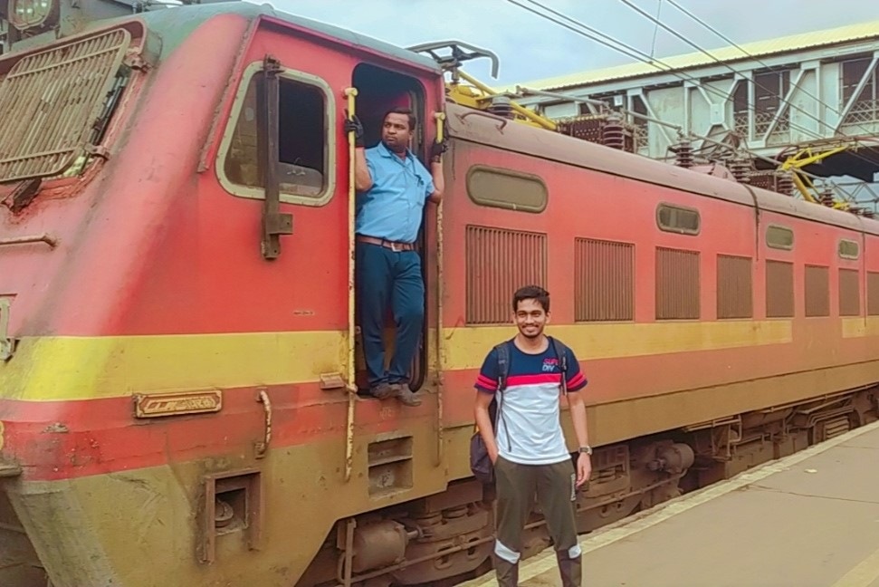

Rail Gallery
Hover your mouse on the Images
Krishnarajapuram/KJM WAP-7
2023-Mysore
Krishnarajapuram/KJM WAG-9HC
2023-Mysore
Krishnarajapuram/KJM WAG-9HC
2023-Mysore
Lallaguda/LGD WAP-7
2023-Mysore
Krishnarajapuram/KJM WAG-9HC
2023-Mysore
Entering Toranagallu JN
2022-Toranagallu JN
Gooty/GY WDP-4D
2022-Parli Vaijnath
Scenic view of Ghats
2022-B/W Latur & Parbhani
Freights at Toranagallu JN
2022-Toranagallu JN
Guntakal/GTL Loco shed
2022-Guntakal JN
Bhilai/BIA WAP-7
2022-Lonavala

Vadodara/BRC WAP-4
2022-Pune
Kazipet/KZJ WDG-4D Twins
2022-Near Mantralayam Road
Bhilai/BIA WAG-7 Twins
2022-Raichur JN
Saharanpur/SRE WAG-12
2022-Near Krishna
Bankers Locomotives
2022-Lonavala
Arakkonam/AJJ WAP-4
2022-Mysore
Bezel less 1AC Coach
2022-Mysore
Krishnarajapuram/KJM WDP-4D
2022-Mysore
Lallaguda/LGD WAP-7
2022-Mysore
Lallaguda/LGD WAP-7
2022-Toranagallu JN
8W OHE Van
2022-Mysore
Installation of OHE Poles at RRB
2021-Birur
Krishnarajapuram/KJM WAP-7 "Rani Chennamma"
2021-Mysore
© Made with ❤ by - Rakshith S Nadiger